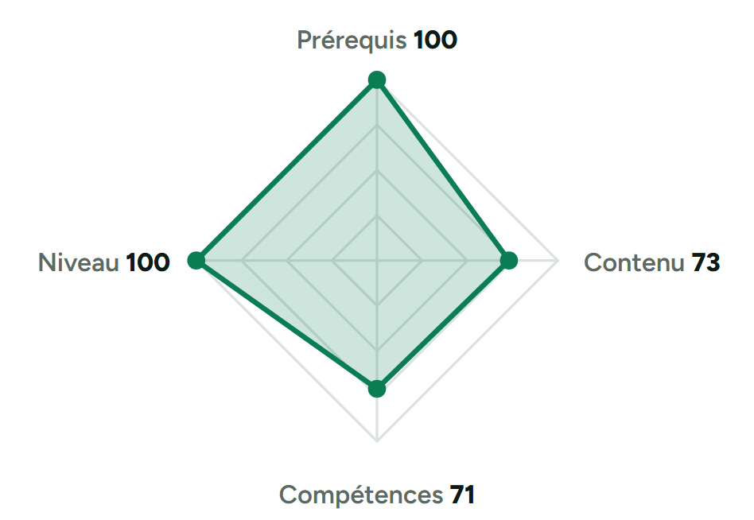
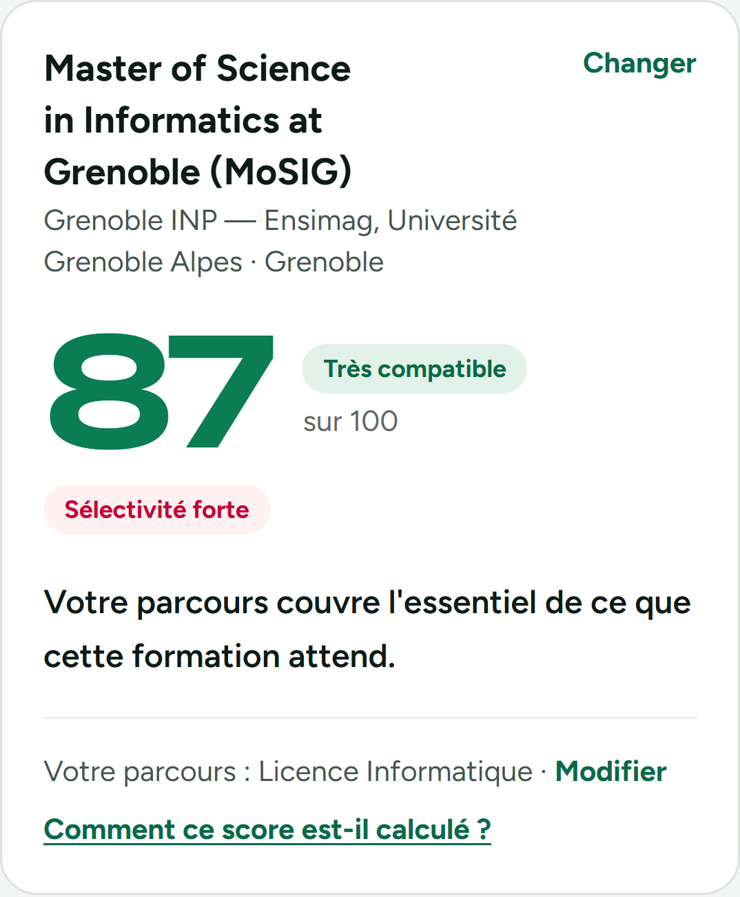

Choisir ses études à l'étranger ne devrait pas être un pari.
Derrière chaque formation, il y a des prérequis réels.
Derrière chaque étudiant, un parcours unique.
AcadMatch les compare, avec des sources officielles.

Un score qu'on peut expliquer.

Des actions concrètes.

Pas une promesse d'admission — de la clarté.